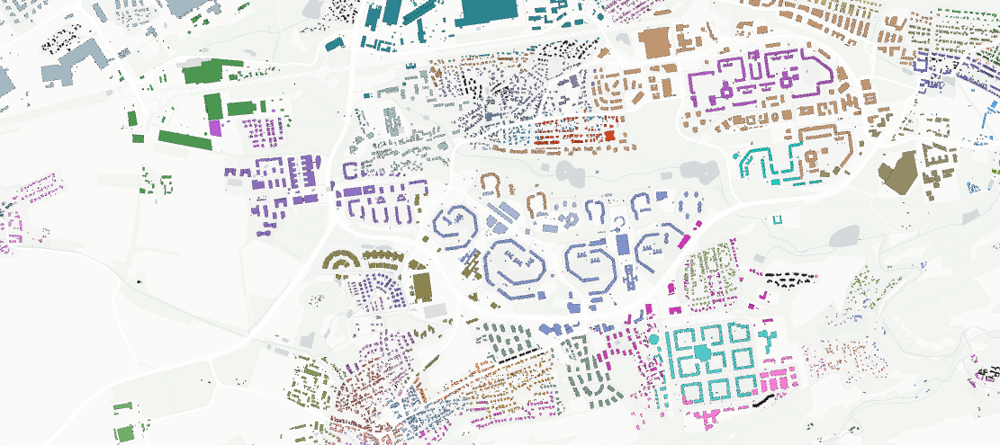

This page was generated from notebooks/sa3.ipynb.
Interactive online version:

Spatial Adaptive Agglomerative Aggregation (\(SA^3\))¶
Author: Krasen Samardzhiev, Martin Fleischmann
Spatial Adaptive Agglomerative Aggregation (\(SA^3\)) is a regionalisation method that extracts regions at multiple scales. It consists of two parts:
Computing a full regionalisation tree with any
sklearn.hierarchy.AgglomerativeClusteringalgorithm and spatial restrictions imposed by alibpysal.graph.Graphorlibpysal.weights.W.Extraction of spatial regions with noise, i.e. some observations will not belong to any of the extracted regions.
The algorithm does not require to specify the total number of clusters beforehand. Strictly, it requires only one parameter - the minimum number of spatially contigous observations to form a cluster (min_cluster_size). It is inspired by density-based clustering approaches and each resulting region can be interpreted as an approximate mode in the data distribution, given the spatial restrictions imposed by the graph G or weights W. The final delineations are:
Contiguous - Observations in the same cluster are spatially contiguous within the restrictions imposed by the graph.
Conservative - Observations are not merged, simply because of spatial restrictions if they are not similar in feature space.
Multiscale - The extraction from the tree is not flat. Sometimes the internal dissimilarity of a specific region is higher than the external dissimilarity of another pair of regions. Even if that is the case, the pair of regions are not merged.
Dynamic - The final number of clusters is inferred from the data based on the
min_cluster_sizeparameter and is not predefined.
A drawback of the conservative and dynamic properties of the algorithm, is that it can produce multiple clusters, where only one would be desirable.
The original application was for the deliniation of morphotopes - contigious areas with identical characteristics and configurations of buildings and streets. These three properties were required since:
By definition morphotopes are spatially contiguous.
There are multiple types of urban fabric interspersed within a city which should be kept seperate - single family houses around apartment blocks, for example.
The internal dissimilarity within an industrial area is higher, than the external similarity between a single family housing and a multi-family housing area. Nevertheless, we are interested in getting the three types of coherent units deliniated using one algorithm.
We didnt know how many morphotopes to look for.

[1]:
%config InlineBackend.figure_format = "retina"
%load_ext watermark
%watermark
Last updated: 2025-05-07T11:26:45.560840+02:00
Python implementation: CPython
Python version : 3.12.9
IPython version : 8.34.0
Compiler : Clang 18.1.8
OS : Darwin
Release : 24.4.0
Machine : arm64
Processor : arm
CPU cores : 8
Architecture: 64bit
[2]:
import geopandas
import libpysal
import matplotlib.pyplot as plt
import seaborn as sns
from libpysal.examples import load_example
from spopt.region import SA3
%matplotlib inline
%watermark -w
%watermark -iv
Watermark: 2.5.0
geopandas : 1.0.1
seaborn : 0.13.2
matplotlib: 3.10.1
libpysal : 4.13.0
spopt : 0.1.dev1095+g22fb0ae.d20250507
Airbnb Spots Clustering in Chicago¶
To illustrate results and usage the algorihm we use the Airbnb spots data for Chicago from libpysal.examples.
[3]:
load_example("AirBnB")
pth = libpysal.examples.get_path("airbnb_Chicago 2015.shp")
chicago = geopandas.read_file(pth)
\(SA^3\) Regionalization¶
To use the algorithm we have to specify three parameters:
gdf- the feature data for each observationw- the spatial restrictions on the observationsattrs_name- which features to use for the clusteringmin_cluster_sizethe minimum number of observations, that a cluster should have.
There are also two optional parameters:
extractionwhich specifies if you should extract the final clusters from the tree with theExcess of MassorLeafalgorithms.additional keyword arguments passed to
sklearn.hierarchy.AgglomerativeClusteringspecifying which agglomeration should be used.
We show results based on diffent model configurations below.
In all runs we use only on a single variable - the number of Airbnb spots in each community. Similar to any clustering algorithm, the method accepts more, but the distribution of one variable is easier to visualise for this demonstration. We also use the same spatial graph object which describes the spatial connectivity of the spatial objects. We change the values for min_cluster_size, extraction and additional keyword arguments.
[4]:
attrs_name = ["num_spots"]
w = libpysal.graph.Graph.build_contiguity(chicago, rook=False)
[5]:
## first run takes a while, since the functions are compiled to numba
model_eom_3 = SA3(chicago, w, attrs_name, min_cluster_size=3, extraction="eom")
model_eom_3.solve()
chicago["sa3_eom_3"] = model_eom_3.labels_
model_leaf_3 = SA3(chicago, w, attrs_name, min_cluster_size=3, extraction="leaf")
model_leaf_3.solve()
chicago["sa3_leaf_3"] = model_leaf_3.labels_
model_eom_10 = SA3(chicago, w, attrs_name, min_cluster_size=10, extraction="eom")
model_eom_10.solve()
chicago["sa3_eom_10"] = model_eom_10.labels_
model_leaf_10 = SA3(chicago, w, attrs_name, min_cluster_size=10, extraction="leaf")
model_leaf_10.solve()
chicago["sa3_leaf_10"] = model_leaf_10.labels_
OMP: Info #276: omp_set_nested routine deprecated, please use omp_set_max_active_levels instead.
[6]:
fig, ax = plt.subplots(3, 2, figsize=(10, 20))
sns.kdeplot(chicago["num_spots"], bw_adjust=0.2, ax=ax[0][0])
ax[0][0].set_title("num_spots value distribution")
chicago.plot(
ax=ax[0][1],
figsize=(7, 14),
column="num_spots",
scheme="Quantiles",
cmap="GnBu",
edgecolor="grey",
legend_kwds={"loc": "lower left"},
legend=True,
).axis("off")
ax[0][1].set_title("num_spots spatial distribution")
chicago.plot(
ax=ax[1][0],
column="sa3_eom_3",
categorical=True,
edgecolor="w",
legend=True,
legend_kwds={"loc": "lower left"},
cmap="tab20",
).axis("off")
ax[1][0].set_title("EOM extraction, min_clusters=3")
chicago.plot(
ax=ax[1][1],
figsize=(7, 14),
column="sa3_leaf_3",
categorical=True,
edgecolor="w",
legend=True,
legend_kwds={"loc": "lower left"},
cmap="tab20",
).axis("off")
ax[1][1].set_title("Leaf extraction, min_clusters=3")
chicago.plot(
ax=ax[2][0],
column="sa3_eom_10",
categorical=True,
edgecolor="w",
legend=True,
legend_kwds={"loc": "lower left"},
cmap="tab20",
).axis("off")
ax[2][0].set_title("EOM extraction, min_clusters=10")
chicago.plot(
ax=ax[2][1],
figsize=(7, 14),
column="sa3_leaf_10",
categorical=True,
edgecolor="w",
legend=True,
legend_kwds={"loc": "lower left"},
cmap="tab20",
).axis("off")
ax[2][1].set_title("Leaf extraction, min_clusters=10")
[6]:
Text(0.5, 1.0, 'Leaf extraction, min_clusters=10')
[7]:
chicago[["sa3_eom_3", "num_spots"]].groupby(by="sa3_eom_3").describe()
[7]:
| num_spots | ||||||||
|---|---|---|---|---|---|---|---|---|
| count | mean | std | min | 25% | 50% | 75% | max | |
| sa3_eom_3 | ||||||||
| -1 | 19.0 | 24.578947 | 25.902200 | 0.0 | 6.50 | 21.0 | 35.50 | 109.0 |
| 0 | 5.0 | 541.000000 | 157.786248 | 358.0 | 404.00 | 593.0 | 609.00 | 741.0 |
| 1 | 3.0 | 220.000000 | 49.789557 | 165.0 | 199.00 | 233.0 | 247.50 | 262.0 |
| 2 | 7.0 | 132.714286 | 49.818719 | 75.0 | 106.00 | 120.0 | 148.50 | 225.0 |
| 3 | 4.0 | 31.750000 | 8.808140 | 20.0 | 27.50 | 34.0 | 38.25 | 39.0 |
| 4 | 3.0 | 9.333333 | 1.527525 | 8.0 | 8.50 | 9.0 | 10.00 | 11.0 |
| 5 | 3.0 | 4.000000 | 3.605551 | 0.0 | 2.50 | 5.0 | 6.00 | 7.0 |
| 6 | 5.0 | 4.800000 | 2.167948 | 2.0 | 4.00 | 5.0 | 5.00 | 8.0 |
| 7 | 4.0 | 6.750000 | 3.403430 | 2.0 | 5.75 | 7.5 | 8.50 | 10.0 |
| 8 | 3.0 | 1.000000 | 1.000000 | 0.0 | 0.50 | 1.0 | 1.50 | 2.0 |
| 9 | 7.0 | 0.428571 | 0.534522 | 0.0 | 0.00 | 0.0 | 1.00 | 1.0 |
| 10 | 3.0 | 1.333333 | 1.154701 | 0.0 | 1.00 | 2.0 | 2.00 | 2.0 |
| 11 | 6.0 | 2.833333 | 0.752773 | 2.0 | 2.25 | 3.0 | 3.00 | 4.0 |
| 12 | 5.0 | 4.000000 | 1.414214 | 3.0 | 3.00 | 3.0 | 5.00 | 6.0 |
[8]:
chicago[["sa3_eom_10", "num_spots"]].groupby(by="sa3_eom_10").describe()
[8]:
| num_spots | ||||||||
|---|---|---|---|---|---|---|---|---|
| count | mean | std | min | 25% | 50% | 75% | max | |
| sa3_eom_10 | ||||||||
| -1 | 26.0 | 182.807692 | 200.743821 | 20.0 | 39.25 | 109.5 | 231.0 | 741.0 |
| 0 | 37.0 | 4.405405 | 5.459240 | 0.0 | 1.00 | 3.0 | 6.0 | 24.0 |
| 1 | 14.0 | 7.857143 | 8.795603 | 1.0 | 2.50 | 6.0 | 9.5 | 36.0 |
In general, increasing the min_cluster_size value increases the number of outliers, while decreasing the resolution of the final results. Also changing the extraction to leaf by setting extraction="leaf", sometimes produces more conservative and more numerous clusters.
Changing agglomeration type.¶
You can use the any valid combination of linkage, metric and other sklearn.hierarchy.AgglomerativeClustering parameters. The default clustering is Ward with Euclidean distance.
[9]:
for linkage in ["single", "complete", "average", "ward"]:
model = SA3(
chicago,
w,
attrs_name,
min_cluster_size=5,
extraction="leaf",
linkage=linkage,
)
model.solve()
chicago[f"sa3_leaf_5_{linkage}"] = model.labels_
[10]:
fig, axes = plt.subplots(2, 2, figsize=(10, 10))
for linkage, ax in zip(
["single", "complete", "average", "ward"], axes.flatten(), strict=False
):
chicago.plot(
ax=ax,
column=f"sa3_leaf_5_{linkage}",
categorical=True,
edgecolor="w",
legend=True,
legend_kwds={"loc": "lower left"},
cmap="tab20",
).axis("off")
ax.set_title(f"{linkage} linkage, leaf extraction, min_clusters=5")
[11]:
chicago[["sa3_leaf_5_complete", "num_spots"]].groupby(
by="sa3_leaf_5_complete"
).describe()
[11]:
| num_spots | ||||||||
|---|---|---|---|---|---|---|---|---|
| count | mean | std | min | 25% | 50% | 75% | max | |
| sa3_leaf_5_complete | ||||||||
| -1 | 29.0 | 71.034483 | 77.103587 | 0.0 | 7.00 | 39.0 | 110.00 | 262.0 |
| 0 | 5.0 | 541.000000 | 157.786248 | 358.0 | 404.00 | 593.0 | 609.00 | 741.0 |
| 1 | 16.0 | 10.437500 | 11.063265 | 1.0 | 3.50 | 7.5 | 10.25 | 36.0 |
| 2 | 6.0 | 9.000000 | 2.607681 | 6.0 | 7.25 | 8.5 | 10.50 | 13.0 |
| 3 | 10.0 | 3.100000 | 0.875595 | 2.0 | 3.00 | 3.0 | 3.00 | 5.0 |
| 4 | 11.0 | 0.818182 | 0.873863 | 0.0 | 0.00 | 1.0 | 1.50 | 2.0 |
[12]:
chicago[["sa3_leaf_5_single", "num_spots"]].groupby(by="sa3_leaf_5_single").describe()
[12]:
| num_spots | ||||||||
|---|---|---|---|---|---|---|---|---|
| count | mean | std | min | 25% | 50% | 75% | max | |
| sa3_leaf_5_single | ||||||||
| -1 | 33.0 | 62.090909 | 75.760463 | 0.0 | 7.00 | 24.0 | 109.00 | 262.0 |
| 0 | 5.0 | 541.000000 | 157.786248 | 358.0 | 404.00 | 593.0 | 609.00 | 741.0 |
| 1 | 18.0 | 13.111111 | 13.118863 | 1.0 | 4.25 | 8.0 | 19.25 | 40.0 |
| 2 | 8.0 | 2.125000 | 1.125992 | 0.0 | 1.75 | 2.5 | 3.00 | 3.0 |
| 3 | 13.0 | 1.461538 | 1.330124 | 0.0 | 0.00 | 1.0 | 2.00 | 4.0 |
Cluster extraction from a generic linkage_matrix.¶
You can also directly use the cluster extraction with any valid scipy.hierarchy.linkage_matrix.
[13]:
from spopt.region import extract_clusters
model = SA3(chicago["num_spots"], w, ["num_spots"], linkage="single")
# bypass the spatial restriction and do simple ward clustering and
# return a scipy.hierarchy.linkage_matrix
linkage_matrix = model._get_tree(chicago[["num_spots"]], None, model.clustering_kwds)
eom_clusters = extract_clusters(
linkage_matrix=linkage_matrix, min_cluster_size=2, extraction="eom"
)
[14]:
fig, ax = plt.subplots(1, 2, figsize=(10, 5))
sns.kdeplot(chicago["num_spots"], ax=ax[0])
xs = chicago["num_spots"].groupby(eom_clusters).median()
ax[0].scatter(
xs[xs.index != -1].values, [0.0001] * (xs.index.shape[0] - 1), marker="|", c="red"
)
ax[0].set_title("num_spots value distribution")
chicago.plot(
ax=ax[1], column=eom_clusters, categorical=True, edgecolor="w", cmap="tab20"
).axis("off")
ax[1].set_title("unrestricted ward linkage, eom extraction, min_clusters=2")
fig.tight_layout()
The first image shows the distribution of the num_spots variable, and the red lines show the medians of the clusters. The second image shows the spatial distribution of the clusters, which are not neccasarily contiguous in this case. The underlying idea of cluster extraction as density approximation is more apparent when using SingleLinkage and no spatial restrictions.